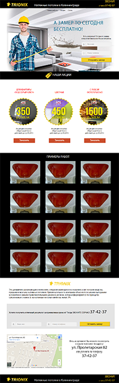
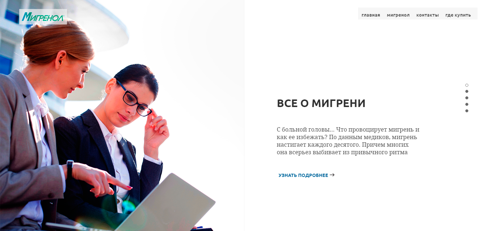
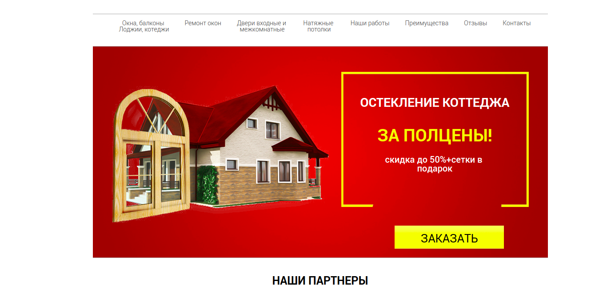
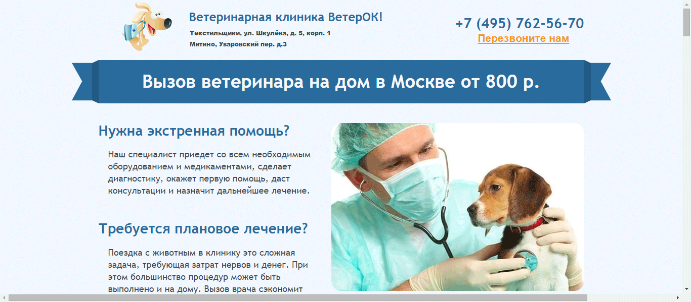
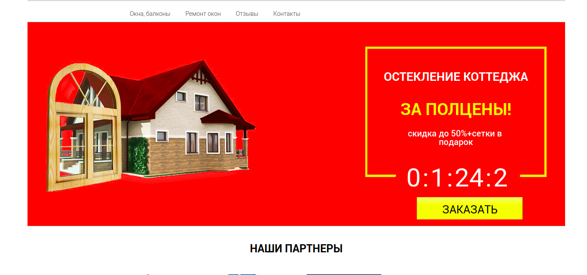
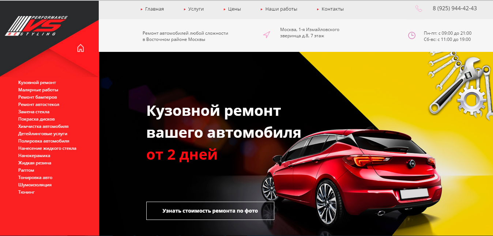
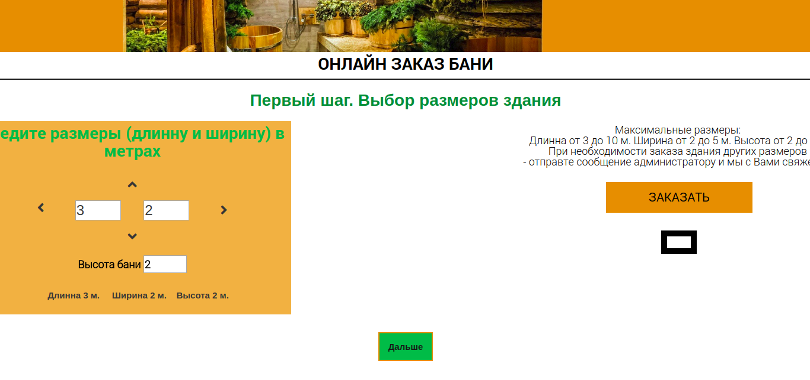
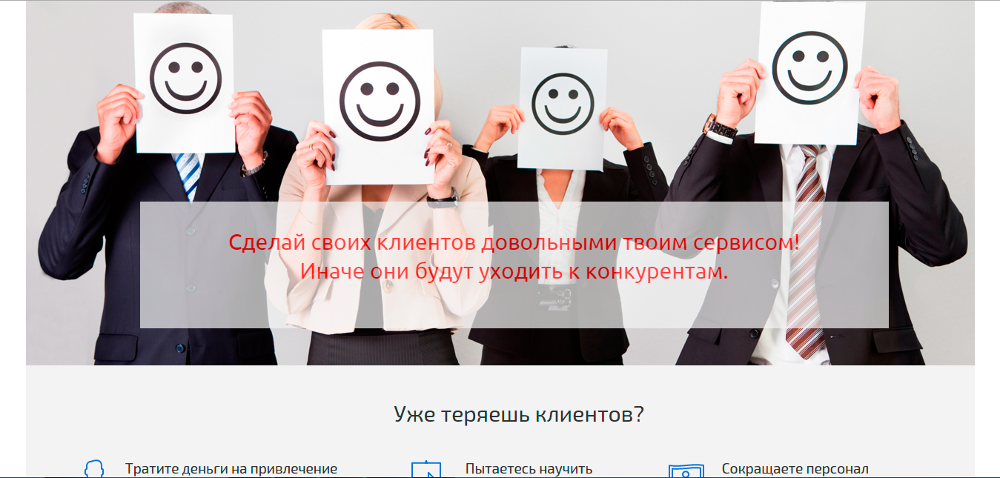

Александр Тупиченков
Здравствуйте, я front end разработчик, подробнее обо мне можно почитать на fl.ru
Портфолио
Сайт натяжных потолков
Сайт создавался и был успешно залит на WordPress. На сайте слайдер и наполнение контентом (добавление, редактирование, удаление объектов) управляются с помощью админки WordPress. На сайте подключена галерея товаров.
Сайт Мигренол
Сайт Мигренол. Адаптивный сайт. Перелистывание страниц выполняется кнопками вверх-вниз, колесиком мыши или нажатием на нажатие соответствующей точки в правой части экрана. Полное описание всех блоков открывается в всплывающем окне с возможностью вертикальной прокрутки.
Сайт Окна и двери
Простенький сайт компании занимающейся продажей окон и дверей. Таймер обратного отсчета считает оставщееся время до начала недели. Для перехода на сайт достаточно кликнуть на картинку.
Ветеринарный врач на дом
Сайт сделан на основе рисунка формата jpg. Простенький сайт ветеринарной клиники. С возможностью быстрого перехода по разделам сайта и удобного наполнения сайта контентом. Для перехода на сайт достаточно кликнуть на картинку.
Вариант сайта с анимацией
Вариант сайта с анимацией. Сайт сделан на основе другого сайта с добавлением элементов анимациию. Для перехода на сайт достаточно кликнуть на картинку.
Сайт автосервиса
Пример многостраничного сайта. Основная и 5 внутренних. Переход на внутренние страницы при клике на название блока. Сайт адаптивный. По завершению верстки сайт установлен на WordPress. Для перехода на сайт достаточно кликнуть на картинку.
Сайт с онлайн калькулятором стоимости заказа
Сайт с онлайн калькулятором стоимости заказа в зависимости от выбранных вариантов заказа. Форма предварительного просмотра заказа позволяет просмотреть все ранее выбранные позици и при необходимости возвратиться на страницы заказа для уточнения отдельных позиций. Для перехода на сайт достаточно кликнуть на картинку.
Сайт энциклопедии Джона Шоул
Пример простого LP сделаного на Bootstrap. В процессе выполнения заказа сайт несколько раз переделывался и вот что в конце получилось. Для перехода на сайт достаточно кликнуть на картинку.